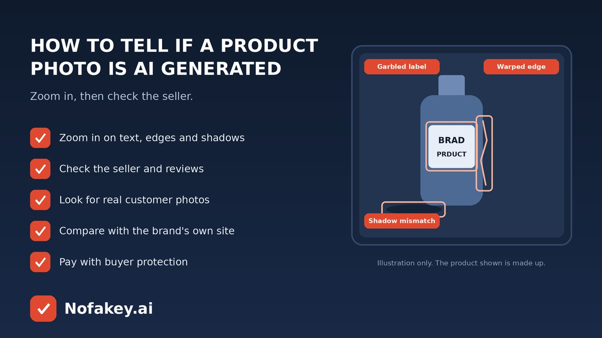

The sofa looks perfect. The watch has flawless lighting. The price is suspiciously low. Before you tap “buy,” it’s worth asking whether the product photo is real. AI image tools can now create glossy, convincing product pictures in seconds, and some fake shops use them to sell things that don’t exist or don’t look like the photo. This short guide shows what to look for, how to check, and why an AI-looking photo isn’t always a scam.
Visual signs of an AI-generated product photo
Save the image or zoom in on a large version, and look slowly.
| What to check | What it can look like |
|---|---|
| Text, labels and logos | Garbled or half-formed letters, misspelled brand names, logos that look slightly “off” or change between photos |
| Details that make no sense | Stitching that wanders, buttons or ports that don’t line up, handles that merge into the body, extra or missing parts |
| Edges and surfaces | Melting or wavy edges, textures that smear, patterns that repeat in odd ways |
| Light, shadows and reflections | Shadows pointing different directions, reflections that don’t match the room, an overly glossy glow |
| People and hands | Strange fingers, fused jewellery, skin that is too smooth, or a model whose clothes don’t fit logically |
| Too perfect, too samey | Every image has the same flawless look, no real-world clutter, and no photo from an unusual angle |
| Photos that don’t agree | The product changes colour, shape or size from one image to the next |
One flaw can be a bad edit. A cluster of them is a reason to slow down.
How to check before you buy
- Look at the seller. How old is the account or shop? Is there a real address, contact details and a clear return policy?
- Read recent reviews, especially ones with customer photos. Be wary of listings with no reviews, or only vague five-star praise.
- Run a reverse image search on the main photo. If it shows up on unrelated shops or under a different product, that’s a red flag. It may not find a brand-new AI image, so treat it as one clue.
- Compare with the official brand site. Genuine products usually match the brand’s own listing in design, colour and details.
- Ask for more. A real seller can usually send an extra photo or short video of the actual item. Silence or excuses are telling.
- Test the price. A branded item far below normal prices, plus pressure like “only 2 left,” is a classic scam pattern.
- Pay safely. Prefer a payment method with buyer protection, and avoid paying by direct bank transfer to a stranger or moving the chat off the platform.
An AI-looking photo isn’t always a scam
Many honest sellers use AI tools, 3D renders and heavy retouching to create mockups or lifestyle scenes, and some brands say so. What matters is whether the picture misleads you about what you will receive. Watch for these danger signs together:
- No real photos anywhere, and no way to see the actual item.
- A price that is far too good, with pressure to pay quickly.
- A new shop with no history, no clear contact details and vague policies.
- Reviews that look copied, or that don’t match the product.
If you already paid and it doesn’t match
- Save evidence: screenshots of the listing, photos, your order and messages.
- Contact the seller and the platform, and use the platform’s dispute or return process.
- Contact your bank or payment provider to dispute the charge. Dispute windows can be limited, so act quickly.
- Report the listing to the platform, and to your national consumer or cybercrime service if it looks like a scam.
- Watch for follow-up scams that pose as “refund” or “support” teams and ask for codes or card details.
Fake shops often reach you through ads, DMs or emails. Our guides to AI-generated scam emails and the fake AI customer support chat scam cover the follow-up tricks. If a shop link or message looks off, paste it into our free checker for a quick first read. For tools that claim to spot AI images, see are AI detectors accurate?
Frequently asked questions
How can I tell if a product photo is AI generated?
Zoom in and look for garbled text and logos, warped edges, impossible details, mismatched shadows and reflections, and oddly perfect lighting. Then check the seller, reviews with real customer photos and the brand’s official site. Several signs together matter more than one.
Does an AI-generated product photo mean the listing is a scam?
Not necessarily. Honest sellers sometimes use AI or 3D renders for mockups. It becomes a concern when the photo hides what you will actually receive, or when other warning signs appear, such as a very low price, no reviews or pressure to pay quickly.
Can reverse image search help check a product photo?
It can show whether the same photo appears on other stores, brands or unrelated sites. That can reveal stolen or reused images, but it will not always find a brand-new AI image.
What if I already paid for something that looks different from the photo?
Keep screenshots of the listing, your order and messages, contact the seller and the platform, and open a dispute with your payment provider or bank. Act quickly, as dispute windows can be limited.
How can I shop more safely online?
Buy from sellers with a real history, read recent reviews that include customer photos, check the return policy, be wary of prices that seem too good, and use payment methods that offer buyer protection.
Conclusion
You don’t need to be a photo expert. Zoom in for the obvious slips, then lean on what AI can’t easily fake: a seller’s history, real customer photos, a matching brand listing and safe payment. If the answer is still “can’t tell,” skip the deal. Find more guides on the Nofakey.ai blog.
Got a suspicious shop link, message or email to check?
Run it through the checker